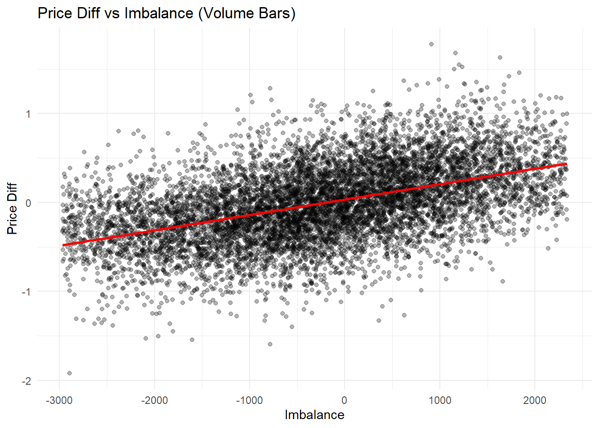

source("bar_params.R")
bars_time_raw <- readRDS("data/bars/bars_time_raw.rds")
bars_volume_raw <- readRDS("data/bars/bars_volume_raw.rds")Estimation of Market Impact
Introduction
To compute trading curves and trading envelopes pre-trade estimates of market impact and execution costs are needed.
We use a trades tape and the L1 orderbook ticker data for SOLUSD_PERP on binance, covering 2024-01 through 2024-09. For every trade, we align the book ticker data with the trades and record the observed pre-trade mid-price (pre_mid) and post trade mid-price (post_mid). These pre- and post- mid-price observations are used to determine the price impact of a trade.
Note: We could also assess if the order rode the book be adding the pre-book metrics and post_book metrics and see if the best bid or ask price changed.
The raw trades and book ticker files for this range total around 60GB, too much to load into memory in one go. build_bars.R builds the time- and volume-based bars described below one month’s files at a time (aligning trades with the book ticker, signing trades, and aggregating into bars), discarding each month’s raw data before moving to the next, and writes the combined, multi-month bars to data/bars/. Run it once (Rscript build_bars.R, from this directory) whenever the parameters in bar_params.R change or new monthly data is added; this document then just loads its output.
The mid price of a stock is modeled by a process \[ d S_t = \sigma d W_t + k v_t dt \] where \(\sigma\) is a positive constant called the arithmetic volatility of the asset, and \(k\) is the nonegative parameter modeling the magnitude of the permanent market impact.
Goal: Investigate how the trader’s own actions together with the order flow of other market participants affects the price of the assets she is trading.
Under this model, the price change observed over a bar should be proportional to the signed order flow (“imbalance”) that traded during that bar, with the constant of proportionality being an estimate of \(k\). Every trade is signed using the taker’s side: a trade where the buyer was the maker (is_buyer_maker == TRUE) was initiated by a seller, so it is assigned a sign of \(-1\); otherwise it was initiated by a buyer and gets a sign of \(+1\). sign_base_qty (computed in build_bars.R) is the signed traded volume of a single trade, and summing it over a bar gives that bar’s order flow imbalance (imbalance, already present in the bars loaded above).
Parameters
The two aggregation schemes below (fixed time bars and fixed volume bars) are controlled by the parameters in bar_params.R (bar_interval, volume_bin_size, std_dev_window, loaded above), which is shared with build_bars.R so this report always describes the bars that were actually built. The outlier filtering applied to both schemes is controlled by the parameters below, which only affect this document and can be tuned without rebuilding the bars.
# Outlier filtering thresholds (see "Outlier Filtering" section below).
# Fraction of bars trimmed from the extreme end of the buy-side and of the
# sell-side imbalance distributions (each side trimmed independently).
imbalance_trim_pct <- 0.05
# Fraction of bars trimmed from the top of the rolling standard deviation
# distribution.
std_dev_trim_pct <- 0.01
# Fraction of bars trimmed from the top of the traded volume (base_qty)
# distribution.
base_qty_trim_pct <- 0.05
# Minimum absolute order-flow imbalance (in base asset units) required to
# keep a bar. Binance enforces a minimum order size on SOLUSD_PERP
# (0.01 SOL), so bars whose net imbalance is only a few multiples of that
# minimum are dominated by order-size rounding rather than genuine signed
# flow, and are dropped as noise.
min_imbalance <- 1.0Outlier Filtering
Bars with extreme order-flow imbalance, extreme local volatility, or extreme traded volume can dominate an unweighted least-squares fit and distort the estimate of \(k\), so they are removed before fitting.
Four trims are applied:
- Imbalance: the buy side (
imbalance >= 0) and the sell side (imbalance < 0) are trimmed separately, each byimbalance_trim_pct, since the two sides need not be symmetric (e.g. a strong upward drift in the sample would otherwise make one side look more “extreme” than the other purely because of its longer tail). - Rolling standard deviation: bars whose local mid-price volatility is in the top
std_dev_trim_pctare dropped, since these bars are more likely to reflect a regime change (e.g. a news event) rather than the steady-state relationship between order flow and price we’re trying to estimate. - Traded volume (
base_qty): bars whose total traded volume is in the topbase_qty_trim_pctare dropped, since unusually large bars are more likely to coincide with the volatility and imbalance extremes above. - Minimum imbalance: bars whose absolute net imbalance is below
min_imbalanceare dropped. Binance’s minimum order size on this instrument means very small net imbalances are largely order-size rounding noise rather than a meaningful signal of order flow, so including them would just add noise to the regression rather than information.
These outliers are expected to overlap substantially (a bar with an extreme imbalance is also likely to have high traded volume, for example), so all four cutoffs are computed from the same, unfiltered set of bars and applied together in a single pass, rather than sequentially (which would otherwise shift later cutoffs based on what earlier trims had already removed).
trim_extreme_bars <- function(bars,
imbalance_trim_pct,
std_dev_trim_pct,
base_qty_trim_pct,
min_imbalance) {
buy_side_imbalance <- bars$imbalance[bars$imbalance >= 0]
sell_side_imbalance <- bars$imbalance[bars$imbalance < 0]
# Upper cutoff for the buy side and lower cutoff for the sell side, each
# computed within its own side of the distribution.
imbalance_high <- quantile(buy_side_imbalance, 1 - imbalance_trim_pct, na.rm = TRUE)
imbalance_low <- quantile(sell_side_imbalance, imbalance_trim_pct, na.rm = TRUE)
std_dev_high <- quantile(bars$std_dev, 1 - std_dev_trim_pct, na.rm = TRUE)
base_qty_high <- quantile(bars$base_qty, 1 - base_qty_trim_pct, na.rm = TRUE)
# All conditions are combined into a single logical mask and applied in
# one pass. Bars with an NA rolling standard deviation (the first
# std_dev_window - 1 bars, before the rolling window is full) are dropped
# as a side effect, since they cannot be evaluated against the std_dev
# cutoff.
keep <- bars$imbalance <= imbalance_high &
bars$imbalance >= imbalance_low &
bars$std_dev <= std_dev_high &
bars$base_qty <= base_qty_high &
abs(bars$imbalance) >= min_imbalance
bars[keep]
}Time-Based Bars
Constructing bars
Trades are grouped into fixed-width wall-clock bars of length bar_interval. For each bar we compute the net signed order flow (imbalance), the total traded volume (base_qty), the number of trades, and the price move over the bar (price_diff), defined as the post-trade mid-price after the last trade in the bar minus the pre-trade mid-price before the first trade in the bar. A trailing rolling standard deviation of the pre-trade mid-price is used as a proxy for the local volatility regime of each bar, and is one of the inputs to the outlier filter above. This is built by build_bars.R (see “Introduction”) and loaded as bars_time_raw above.
Filtering
bars_time <- trim_extreme_bars(
bars_time_raw,
imbalance_trim_pct = imbalance_trim_pct,
std_dev_trim_pct = std_dev_trim_pct,
base_qty_trim_pct = base_qty_trim_pct,
min_imbalance = min_imbalance
)Filtering removed 800950 of the 4051139 time bars (19.8%), leaving 3250189 bars for the regression below.
Regression
The permanent impact parameter \(k\) is estimated by regressing the bar’s price move on its signed order flow, with no intercept, since the model above has no drift term independent of order flow.
fit_time <- lm(price_diff ~ imbalance + 0, bars_time)
summary(fit_time)
Call:
lm(formula = price_diff ~ imbalance + 0, data = bars_time)
Residuals:
Min 1Q Median 3Q Max
-0.55715 -0.01602 0.00015 0.01660 0.59428
Coefficients:
Estimate Std. Error t value Pr(>|t|)
imbalance 3.176e-04 2.850e-07 1114 <2e-16 ***
---
Signif. codes: 0 '***' 0.001 '**' 0.01 '*' 0.05 '.' 0.1 ' ' 1
Residual standard error: 0.03892 on 3250188 degrees of freedom
Multiple R-squared: 0.2764, Adjusted R-squared: 0.2764
F-statistic: 1.242e+06 on 1 and 3250188 DF, p-value: < 2.2e-16Diagnostic plots
ggplot(bars_time, aes(x = imbalance, y = price_diff)) +
geom_point(alpha = 0.3) +
geom_smooth(method = "lm", color = "red", se = TRUE) +
labs(title = "Price Diff vs Imbalance (Time Bars)",
x = "Imbalance", y = "Price Diff")`geom_smooth()` using formula = 'y ~ x'
Volume-Based Bars
Constructing bars
As a robustness check on the time-based bars, we repeat the analysis using fixed-volume bars instead of fixed-time bars: trades are grouped so that each bin contains approximately volume_bin_size units of traded volume, regardless of how long that takes. This removes the effect of time-varying trading activity (bars during quiet periods no longer span much more wall clock time than bars during busy periods) and provides a second, largely independent estimate of \(k\). Volume bins are sized independently within each month’s data (see build_bars.R), since each month is processed on its own; this is loaded as bars_volume_raw above.
Filtering
The same simultaneous filtering rule used for the time bars is applied here, with the same parameters, for consistency between the two approaches.
bars_volume <- trim_extreme_bars(
bars_volume_raw,
imbalance_trim_pct = imbalance_trim_pct,
std_dev_trim_pct = std_dev_trim_pct,
base_qty_trim_pct = base_qty_trim_pct,
min_imbalance = min_imbalance
)Filtering removed 9940 of the 95081 volume bars (10.5%), leaving 85141 bars for the regression below.
Regression
fit_volume <- lm(price_diff ~ imbalance + 0, bars_volume)
summary(fit_volume)
Call:
lm(formula = price_diff ~ imbalance + 0, data = bars_volume)
Residuals:
Min 1Q Median 3Q Max
-1.9755 -0.1960 0.0184 0.2382 3.6907
Coefficients:
Estimate Std. Error t value Pr(>|t|)
imbalance 1.610e-04 9.897e-07 162.7 <2e-16 ***
---
Signif. codes: 0 '***' 0.001 '**' 0.01 '*' 0.05 '.' 0.1 ' ' 1
Residual standard error: 0.3442 on 85140 degrees of freedom
Multiple R-squared: 0.2372, Adjusted R-squared: 0.2372
F-statistic: 2.648e+04 on 1 and 85140 DF, p-value: < 2.2e-16Diagnostic plots
ggplot(bars_volume, aes(x = imbalance, y = price_diff)) +
geom_point(alpha = 0.3) +
geom_smooth(method = "lm", color = "red", se = TRUE) +
labs(title = "Price Diff vs Imbalance (Volume Bars)",
x = "Imbalance", y = "Price Diff")`geom_smooth()` using formula = 'y ~ x'
Conclusion
Regressing bar-level price moves on signed order flow, with no intercept, gives an estimate of the permanent impact parameter \(k\) of 3.176e-04 from the time-based bars (bar_interval = 5 seconds) and 1.610e-04 from the volume-based bars (volume_bin_size = 5000). Both coefficients are positive, consistent with the model: net buying pressure pushes the mid-price up and net selling pressure pushes it down.
The two aggregation schemes agree in sign and order of magnitude, which is a useful cross-check since they bin the same underlying trades in different ways (fixed wall-clock time vs. fixed traded volume) and are therefore not subject to exactly the same biases. The time-based fit explains 27.6% of the variation in price moves (\(R^2\)), while the volume-based fit explains 23.7%. Neither is particularly high, which is expected: order flow imbalance is only one driver of short-horizon price moves, alongside idiosyncratic noise and any other volatility not captured here.
A few caveats are worth keeping in mind when using these estimates:
- The sample covers a single instrument (
SOLUSD_PERP) over 2024-01 through 2024-09, so \(k\) should be treated as specific to that regime rather than a universal constant; it should be re-estimated if used for a materially different period, instrument, or liquidity regime. - The outlier filter removes bars in the extreme tails of imbalance, volatility, and traded volume simultaneously, and also drops bars whose net imbalance is too small to be distinguishable from Binance’s minimum order size (
min_imbalance). This makes the fitted \(k\) representative of “typical” trading conditions, but means it may understate impact during unusually volatile or high-volume periods - precisely the periods where impact costs matter most for execution. - Both bar construction schemes are sensitive to their sizing parameter (
bar_intervalandvolume_bin_sizerespectively); these should be varied as a sensitivity check before relying on a single point estimate of \(k\).